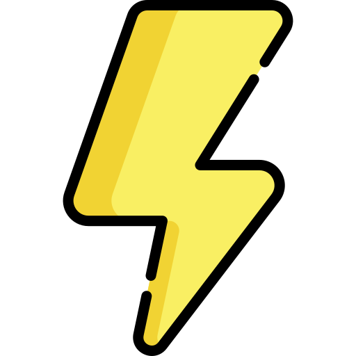

<ion-card (click)="goTo('corona-questions')">
  <ion-card-header>
    

    <ion-card-subtitle>Edition spéciale</ion-card-subtitle>
    <ion-card-title>Confinement</ion-card-title>
  </ion-card-header>

  <ion-card-content>
    Situation exceptionnelle, nouvelles questions exceptionnelle !
    
  </ion-card-content>
</ion-card>